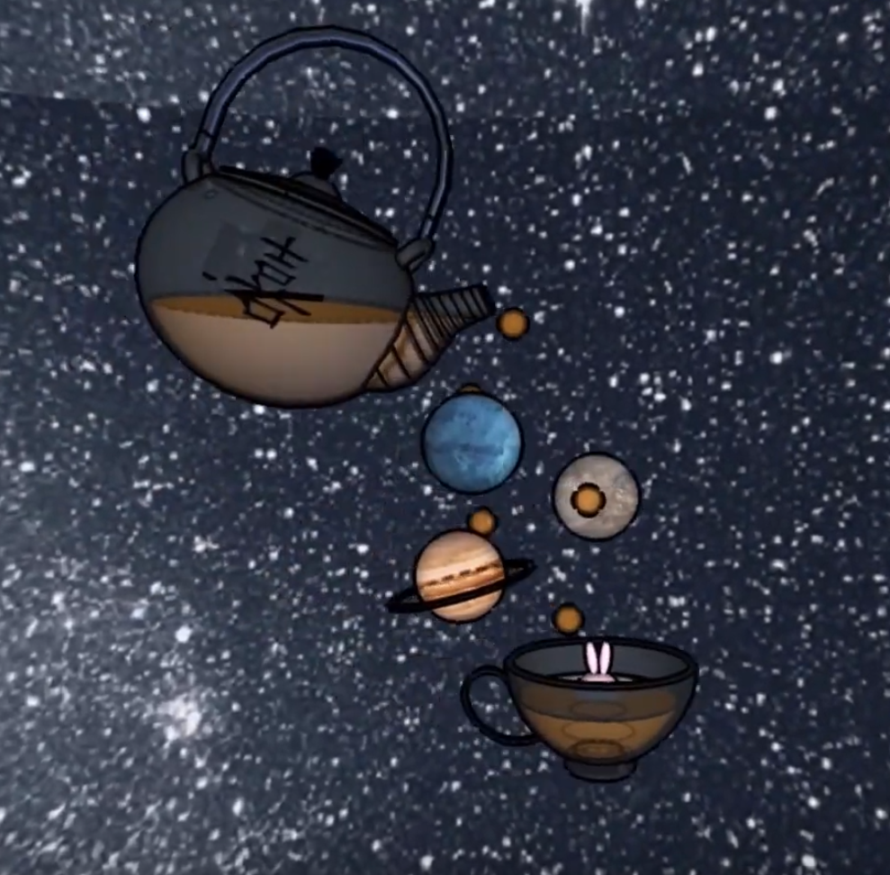

ART121 3D Forms youtube link: here!
To me, home means many things, both physically and emotionally. I often drift to the definition of home revolving around the people and places I feel most connected to, since this is what defines my “home base”. However, I wanted to think of the objects and concepts that represented home to me, and I diffracted my thoughts a little differently than I normally do. First, I chose tea as a central object in my project. In a cultural context, I remember that one of the most interesting memories I have of when I was younger was a little tea ceremony that we performed at home. My mother has a very old clay teapot that is meant for generations of steeping tea, and with each steeping, more flavor is incorporated into the teapot, and I found it incredibly intriguing. Now, I drink tea almost as much as I do water, and it’s interesting how many conversations and friendships I have strengthened over similar interests over tea leaves, blends, and experiences. I also incorporated a space-like theme in my project, and this corresponds with my love of the novel, Hitchhiker’s Guide to the Galaxy, by Douglas Adams. I love reading in general, but the one book that has caught my heart over all others is this one, for an infinite amount of reasons. I was particularly humored by the ability to design your own planet within the novel, so I created a few planets that spill out of the teapot. Finally, there is a little rabbit that is steeping in the tea, which represents my love for animals, in particular cats and rabbits. They are something I incorporate in my art very consistently, and seemed like something that represented home to me.
I enjoyed the process of figuring out how to use Sketchup, mostly as a challenge to force a frustratingly limited and unintuitive software to behave like other superior modeling programs, and produce a nice result. For basic modeling purposes, or very geometric and rectangular forms such as simple houses and architectural structures, Sketchup can be quite helpful, since its functions are very clear and simple to decipher. Sketchup is perfect for younger students who would like an easy introduction to modeling softwares, or for those who have never used a modeling program before. However, it was still fun to explore its more creative options, such as transparency/opacity, importing materials to use, and creating an animated 3D view of my model. I also explored the combination of the real, physical world with the model I created by using Adobe Premiere Pro to mix clips of video I shot together with the animation from Sketchup.